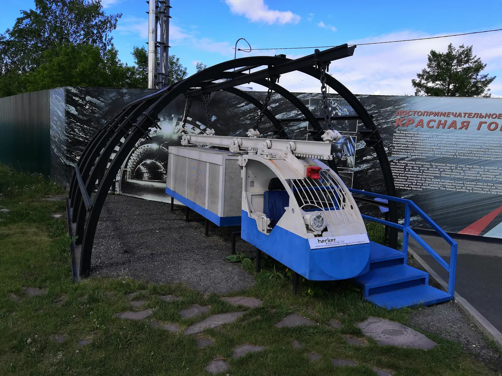

В Кемерове (а пишется именно так, зря мне ВК подчёркивает красной чертой) всё про уголь. Город вырос на руднике, главный музей стоит на руднике, памятник шахтёрам стоит над рекой, и даже надпись на холме не «Кемерово», а «Кузбасс». Меня по-прежнему интересует промышленный туризм, но в действующие шахты туристов не водят: техника безопасности, которую не освоишь за день. Да и самому страшно туда лезть, если честно.
Поэтому день получился про всё, что рядом с шахтой, но не в ней. Музей с муляжами забоя, техника на газоне, памятник Эрнста Неизвестного в сосновом лесу и реликтовый бор, который для промышленного города прямо рай для лёгких. А начался день с яйца в микроволновке.
Схема города: Кемерово · Контур города — © участники OpenStreetMap
- Красная горка · 31 фото
- Памятник шахтёрам · 29 фото
- Смотровая над Томью · 1 фото
- Набережная · 3 фото
- Театр · 11 фото
- Парк ангелов · 4 фото
Хостел попался один из худших за год. Шумновато, грязновато и нет плиты. Я настолько привык, что плита есть всегда, что купил яйца на утро. В интернете нашёл рецепт варки яйца в микроволновке с уверениями, что оно точно-точно не взорвётся. Теперь и рецептам из интернета не верю тоже. Позавтракал сладким и поехал на Красную горку.
Три вещи про Кемерово
- в 1920-х здесь работала Автономная индустриальная колония «Кузбасс»: около 700 человек из разных стран приехали строить в Сибири коммунистическую утопию. Не вышло
- уголь из шахт вывозили на лошадях. Последний конь вышел из шахты в 1972 году
- первый выход человека в открытый космос сделал кемеровчанин Алексей Леонов
Ещё два факта, если интересно
- во время войны заводы перевозили на Урал и в Сибирь. В Кемерове после войны они так и остались на территории города
- город назывался Щегловск. В 1927 году у горожан собирали варианты нового имени: на стенде в музее есть Углесибирск, Пролетарск, Красный Шахтёр и Победоносец. Победило Кемерово
Красная горка: музей вместо шахты
На территории бывшего Кемеровского рудника сделали музей-заповедник. В нём музей истории Кузбасса и экспозиция «Шахта» с забоем, крепью и шахтёрами в полный рост. Раз в настоящую не пускают, довольствовался этой.





Дрон над Томью
Берег здесь высокий, по GPS 218 метров, и с него хочется посмотреть на реку сверху. Запустил.

Колония, имя и космос
В музее истории самое интересное — стенды. Про Автономную индустриальную колонию «Кузбасс», где 700 человек со всего мира строили утопию. Про то, как городу выбирали имя. И про Леонова: Кемерово космический.


Во дворе стелы с гербами городов области и техника. В ковш экскаватора можно залезть, и я залез.


Память шахтёрам Кузбасса
Памятник Эрнста Неизвестного стоит в сосновом лесу у реки. Чёрный, высокий, с надписью на постаменте. Я сел у подножия и отправил дрон вверх.


Рудничный бор
Дальше смотровая площадка в сторону Рудничного бора, где сохранён реликтовый лес. Очень классное место для промышленного города. Птица на пути, скульптура из стволов, орёл на скале и надпись «Кузбасс» на холме.


Набережная и центр
Вечером перешёл на городской берег. Набережная, остров Кемеровский посреди реки, красная «Победа» в георгиевских ленточках, сердце, в которое все встают фотографироваться. Я тоже встал.


Потом центр. Светофор, спиральный и оранжевый, в нескольких городах Сибири видел такие. Скульптура «Колыбель» на цветнике, музыкальный театр, администрация области, здание почты с часами.


Парк ангелов
Закончил в «Парке ангелов». Он классный и современный: камни, подсветка, деревья в деревянных рамах и надписи на плитах. Ночью накануне я, кажется, заходил сюда же, не зная, где оказался.


Хорошо: музей на руднике, где можно залезть в ковш, дрон над Томью и настоящий сосновый бор в черте угольного города. Не хватило самой шахты, нормального хостела и варёного яйца.
- Дней
- 1
- Плит в хостеле
- 0
- Яиц, переживших микроволновку
- 0
- Шахт, куда пустили
- 1, музейная
- Колонистов в АИК «Кузбасс»
- ≈700
- Последний конь вышел из шахты
- 1972
- Высота берега над Томью по GPS
- 218 м
- Кадров с дрона
- 35
- Спиральных светофоров
- 1